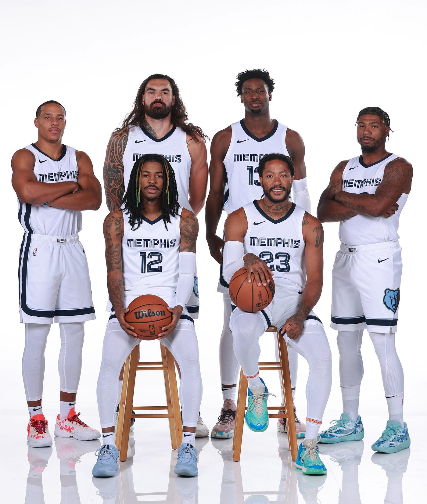

2023-24-es szezon
Idén a csapat igen csak rosszul kezdett mivel a csapat sztár játékosa Ja Morant 25 meccses eltiltással kezdte az évet. Ezek mellett a kezdő center Steven Adams lesérült az egész szezonra. A csapat a két fiatal és igen tehetsége játékosra maradt a tavalyi év védekezdő játékosára Jaren Jackson Jr.-ra és az igen csak alábecsült Desmond Bane-re. Viszont mint ahogy ez a szezon alatt kiderült ők ketten nem elegek ahhoz hogy ez a csapat jó legyen. Az első 27 meccsből csak 7-et sikerült megnyerniük és még nagyon sokan lesérültek.Ezek után vissza jött Morant viszont csak 9 meccsre amiből a csapat már 6 meccset nyert meg. Ezek után sajnos Morant lesérült és egy műtét miatt már nem játszhat az egész szezonban. A csapat még több és több embert vesztett el ezért a G League csapatából hozz fel fiatal tehetségeket ezeknek negyrésze be is vált. Manapság annyi a sérült, hogy a szokásos 5 csere helyett csak 3 van. Ebből kiindulva jogos lehet a kérdés, hogy lesz-e olyan meccs ahol nem tud majd kiálni a csapat mert nem lesz elég emberük.
2023-ig
2001-től kezdve mikor a csapat Memphisbe került fellendültek.Ekkor az akkori újonc Pau Gasol megnyerte az év újonca díjat. Ezzel a csapattal már a Grizzlies képes volt akár 50 meccset is megnyerni. Ez ment egészen 2007-ig mikor az előtő éves rossz szezon után a csapatot újra akarták építeni. 2007-ben draftolták le Mike Conley-t aki azóta több rekordot is tart a csapatnál és oda vitték Marc Gasolt(Pau Gasol kisöccsét) a csapathoz akiből későb szint úgy Memphisi legenda vált.Ezek a változások után 2010-re elég erős középcsapattá voltak.Ezek után fel le járkáltak a langrlétrán amyg 2018-ban le nem draftolták Jarne Jackson Jr. majd a következő évben Ja Morantot. Ez a két játékos elegendő volt arra, hogy a csapat versenybe állhasson egy bajnoki címért. 2020-ban csatlakozott hozzájuk Desmond Bane is aki a mostani(2023-24)-es szezonban kezd csak kibontakozni.
Memphisi Rekordok

Legtöbb meccs - Mike Conley - 788
Legtöbb perc - Marc Gasol - 25917
Legtöbb 3 pontos - Mike Conley - 1086
Legtöbb gól passz - Mike Conley - 4509
Legtöbb Tripla-dupla - Ja Morant - 11
Legtöbb pont - Mike Conley - 11733
Legjobb 3 pontos % - Luke Kennard - .487(48%)
Legjobb pontátlag - Ja Morant - 22.5
Grizz Dance

A Grizz dance a tavalyi évben jött be a köztudatba és igen csak ismerté vált az NBA-n belül.Ez a tánc akkor volt látható mikor a Memphis csapata ment fel a pályára a Los Angeles Lakers ellen a rájátszásban és táncolni kezdtek közbe. Ezt a táncot Dillon Brooks találta ki és azóta is nagyon felkapott az NBA-ben.